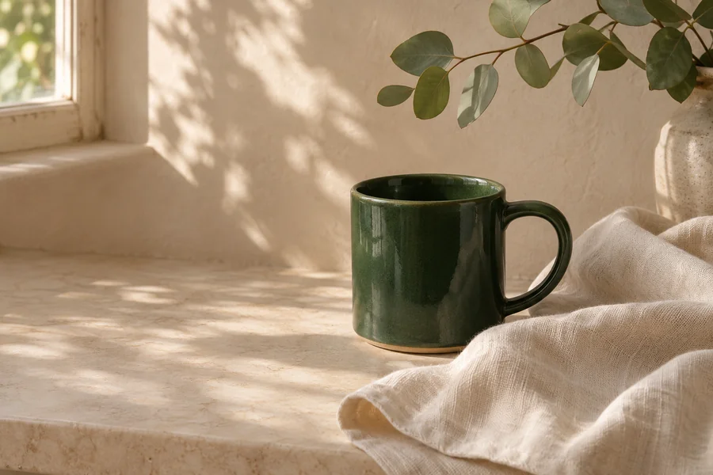
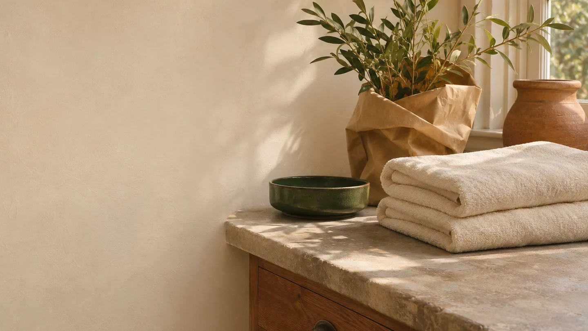
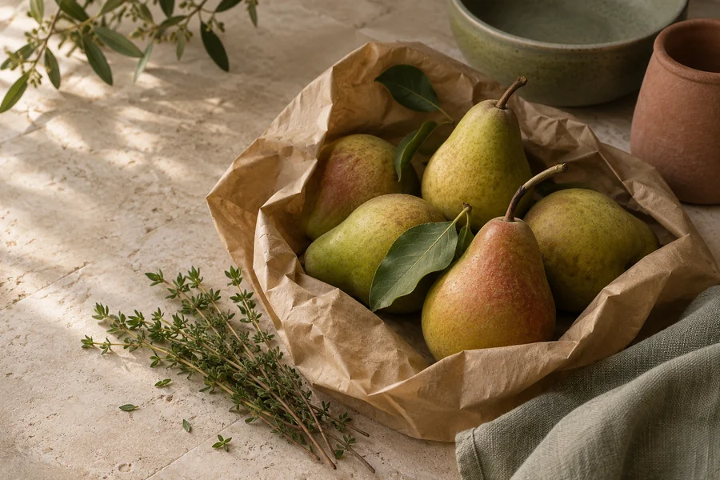

The kitchen edit
Simple staples for cooking, cleaning up, and setting the table.

THE KITCHEN & MARKET EDIT
Kitchen staples and market essentials. A small selection, with the details that make each piece worth choosing.
Explore the editTwo familiar routines, with more attention to what actually makes them easier.

Simple staples for cooking, cleaning up, and setting the table.

A little more order for the grocery run and everything you bring home.
Clear sizes, pack counts, and shipping details help you choose without guessing. Product photography and product facts appear only on verified listings.